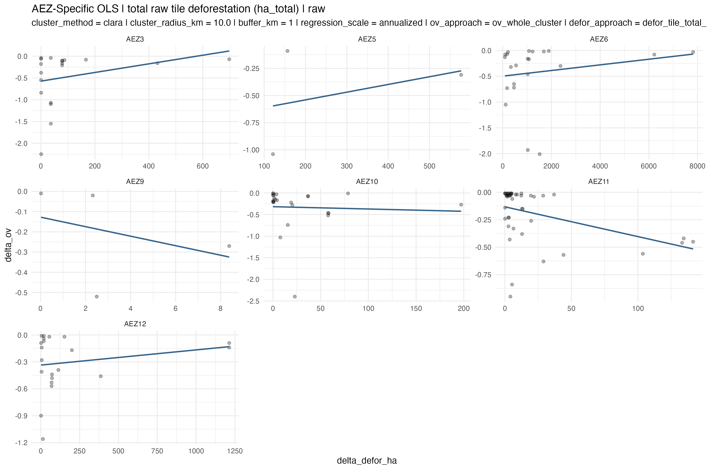
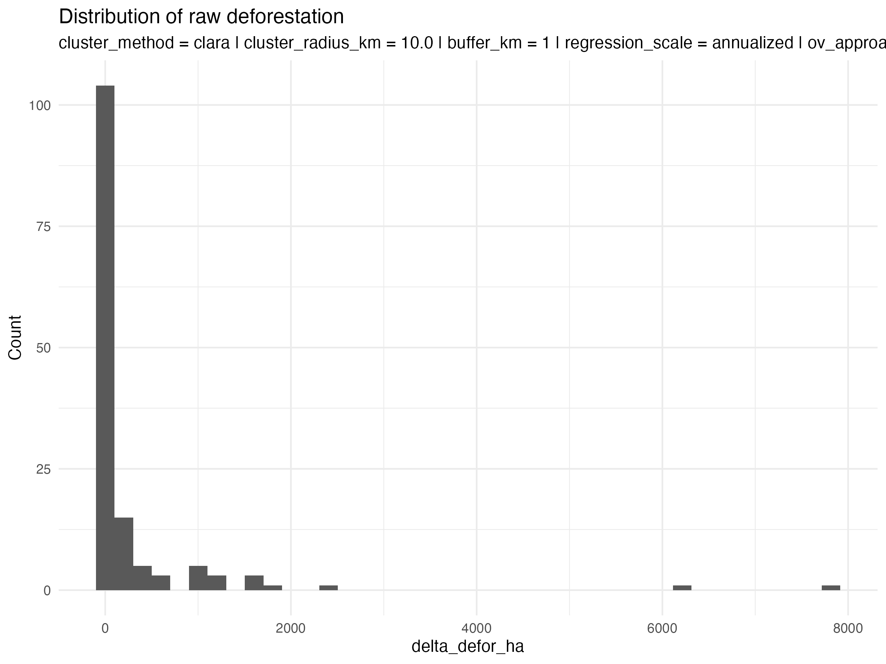
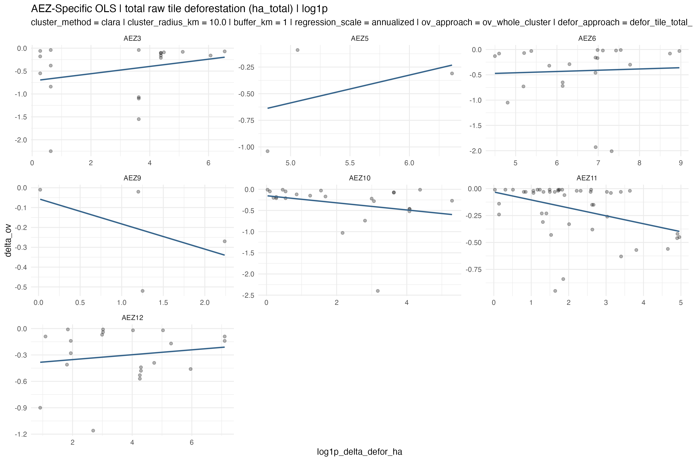
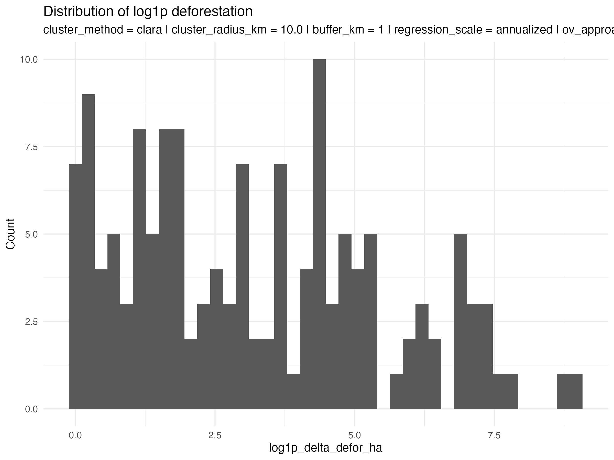
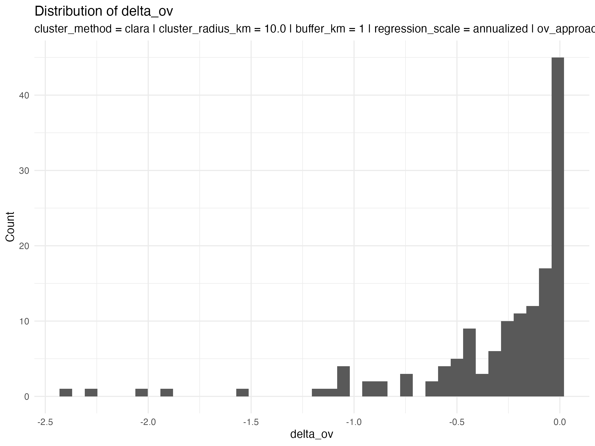
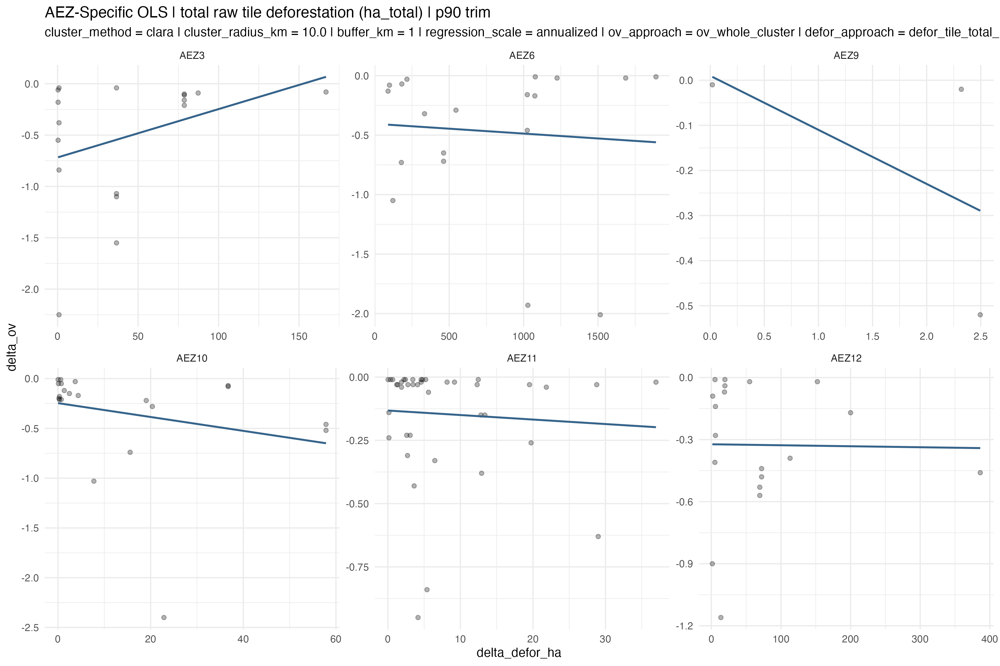
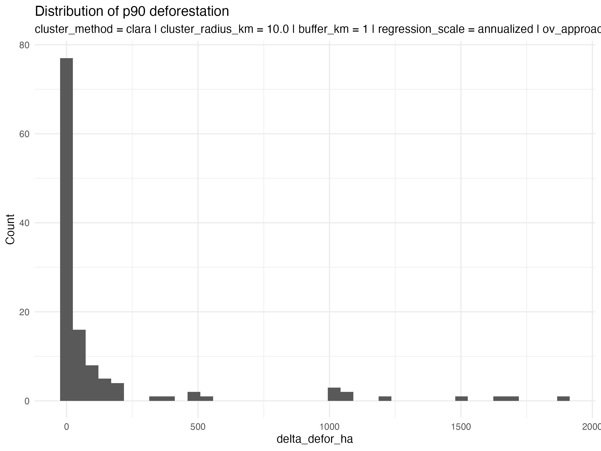

AEZ Regression Fits

Scope:
clara
, radius
10.0
km, buffer
1
km, regression scale
annualized
. Included outputs are ha_total only, covering tile_total, tile_avg, and tile_rel, and limited to the raw, log1p, and p90 deforestation transforms. This bundle is meant to be shared as a folder: keep index.html and the assets/ subfolder together.
AEZs with inverse direction: 3
Best inverse signal: AEZ11 (r = -0.406, strong inverse (< -0.4)).



AEZs with inverse direction: 3
Best inverse signal: AEZ9 (r = -0.476, strong inverse (< -0.4)).



AEZs with inverse direction: 5
Best inverse signal: AEZ9 (r = -0.568, strong inverse (< -0.4)).

